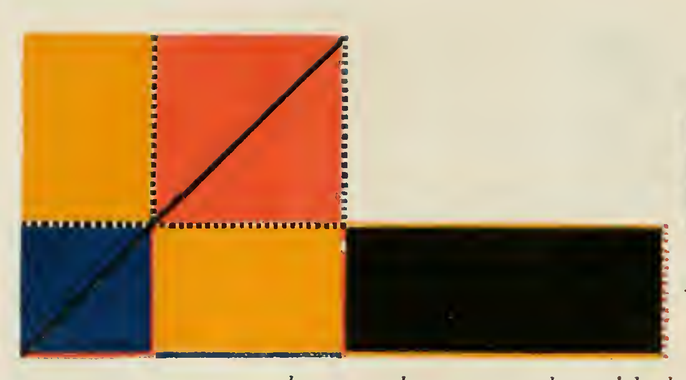

Proposition II.5 — Equal & Unequal Division of a Line¶
Book II, Proposition V. Theorem (Pickering p. 58 · G.148)
If a straight line be divided into two equal parts and also into two unequal parts, the rectangle contained by the unequal parts, together with the square on the line between the points of section, is equal to the square on the half.


Demonstration (:just:`I.46`, :just:`I.43`, :just:`I.36`, :just:`C.N.2`).
Complement equals the other diagonal complement, and since the whole line was bisected at $C$, left wing equals ([I.36], [I.43]).
Adding middle strip to each ([C.N.2]) transforms the rectangle of unequal parts ( + ) into the L-shaped gnomon ( + + lower-right square).
Adding inner square (the square between the points of section) to both completes the square on the half-line! Q.E.D.
See Commentary on Proposition II.5.